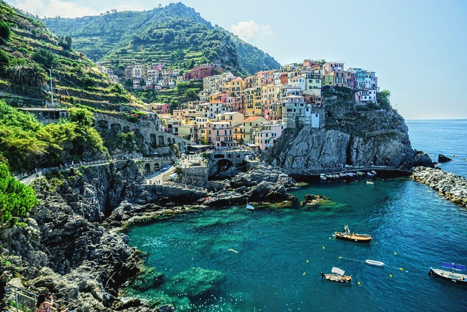
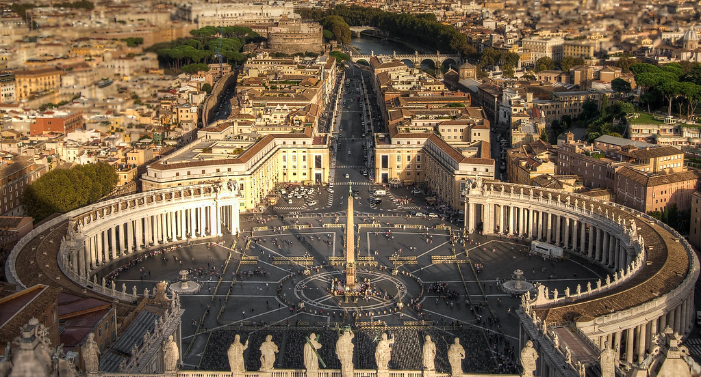
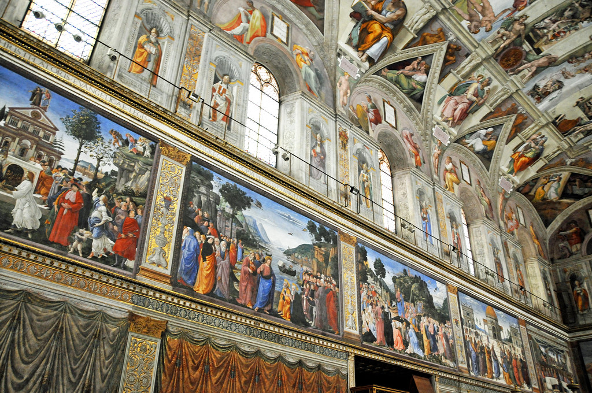
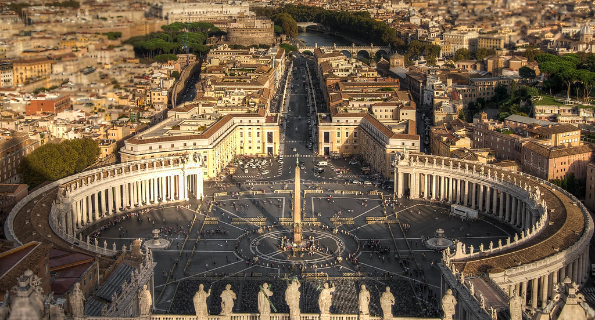
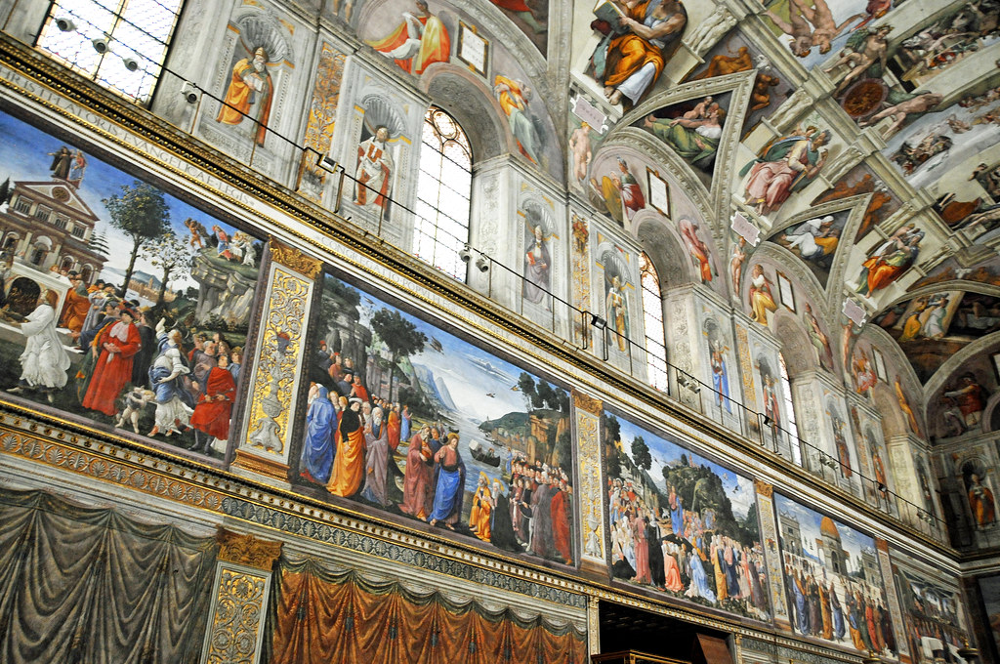

Welcome to Italy
Italy is a very beautiful and culture rich country with lots to do! We hope this website will help you navigate Italy and cater your trip to fit your traveling personality! Navigate to our different parts of our webpage to find links and insider tips to traversing Italy.  Our most popular destinations include places like Florence, Rome, Tuscany, Cinque Terre, Capri, Naples, and so much more. Italy is one of the three great peninsulas in southern Europe and an extremely popular vacation destination. Italy is comprised of some of the most competitve and profilic fishing scenes in all of Europe. Italy is not lacking in its history either, being in southern Europe Italy has kept lots of artifacts and landmarks to visit. If your type of vacation is more exploring Italy has plenty of sites to see and visit.
Most Famous Sites to see
- Flavian Ampitheatre (Roman colosseum)
- The Vatican
- Sistine Chapel
- Pompeii
- Tuscany Countryside
- Venice
 


